A04 – Consulta de dades de diverses taules
Descripció de l'activitat
- Treballarem amb PostGreSQL i base de dades HR i PAGILA.
- Pots consultar els esquemes de la Base de Dades en el següent link: Esquemes de Base de dades per PostgreSQL
- Pots consultar el model relacional en el següent link:
- Pagila
- HR
- Format d'entrega en pdf.
- No adjunteu captures de pantalla ni de la consulta ni amb els resultats.
- Les imatges son orientatives
- Només vull la sentencia SQL escrita (així en cas de dubte la puc copiar-enganxar i executar-la)
{kind=link}
Resultats d'aprenentatge
RA1. Consulta i modifica la informació emmagatzemada en una base de dades emprant assistents, eines gràfiques i el llenguatge de manipulació de dades. - 1.a. Identifica les funcions, la sintaxi i les ordres bàsiques del llenguatge SQL (llenguatge d’interrogació estructurat) per consultar i modificar les dades de la base de dades de manera interactiva. - 1.b. Empra assistents, eines gràfiques i el llenguatge de manipulació de dades sobre un SGBDR corporatiu de manera interactiva i tenint en compte les regles sintàctiques. - 1.c. Realitza consultes simples de selecció sobre una taula (amb restricció i ordenació) per consultar les dades d’una base de dades. - 1.d. Realitza consultes utilitzant funcions afegides i valors nuls - 1.e. Realitza consultes amb diverses taules mitjançant composicions internes - 1.f. Realitza consultes amb diverses taules mitjançant composicions externes
Tasques
Part 1: Base de dades HR (12 punts)
-
Mostra de cada empleat el seu codi, cognom, nom i nom del departament en el que treballa. Ordena les dades per codi empleat. (Taules implicades: employees, departments). (1 punt)
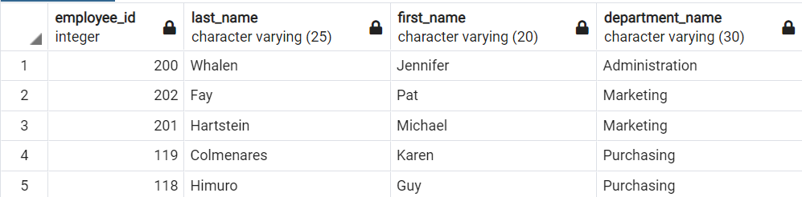
(40 files)
-
Mostra de la taula dependents el seu codi, nom i cognom juntament amb el codi d'empleat, nom i cognom de l'empleat de qui és depenent (Taules implicades: employees, dependents) (1 punt)
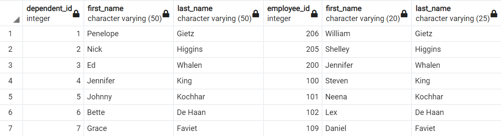
(30 files)
-
Mostra la mateixa informació que en la consulta anterior, però força a que surtin tots els empleats, encara que no tinguin dependent. (Taules implicades: employees, dependents) (1 punt)
(40 files)
-
Mostra de cada departament, el codi, el nom de departament, el codi de localització, l'adreça, el codi postal i la ciutat on està ubicat. (Taules implicades: departments, locations) (1 punt)
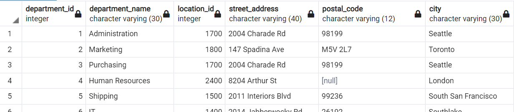
(11 files)
-
Mostra del departament de 'Marketing', el codi, el nom de departament, l'adreça, el codi postal i la ciutat. Per simplificar l'escriptura dona un alies a les taules ( per exemple d per departaments i l per localitzacions ). Utilitza el nom del departament per filtrar. (Taules implicades: departments, locations) (1 punt)
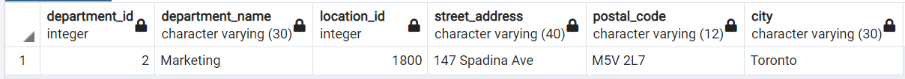
(1 fila)
-
De les localitzacions amb codi 1400, 1700 i 2500, ens interessa saber el seu codi, la ciutat, l'estat de la província i el nom del país. Ordena per codi localització. (Taules implicades: locations, countries) (1 punt)
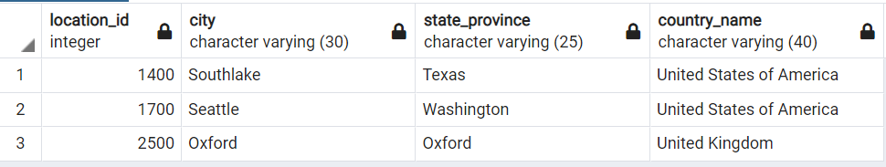
(3 files)
-
Volem saber, dels empleats que van ser contractats abans del 1998 i que tenen un salari entre 10000 i 20000, quins pertanyen al departament de Vendes ( 'Sales' ) o de Comptes ( 'Accounting' ). Mostrar el codi empleat, nom, nom de departament, any de contractació i salari. Ordena les dades per nom de departament. (Taules implicades: employees, departments) (2 punts)
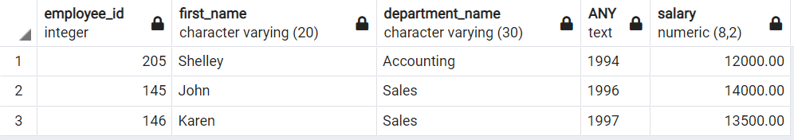
(3 files)
-
Mostra els empleats que treballen (JOB_TITLE) com a 'Programmer' o 'Sales' ( qualsevol 'Sales'). Volem saber el codi empleat, cognoms, el nom del treball, el seu salari, el salari mínim de la categoria a la que estan assignats i el nom del departament en el que treballen. Ordena les dades per JOB_TITLE. (Taules implicades: employees, jobs i departments) (1 punt)
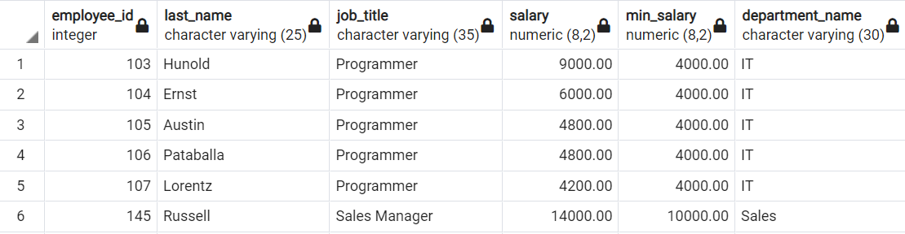
(11 files)
-
Partint de la consulta anterior mostra només els que guanyen més de 1000 euros respecte el salari mínim. (Taules implicades: employees, jobs i departments) (1 punt)
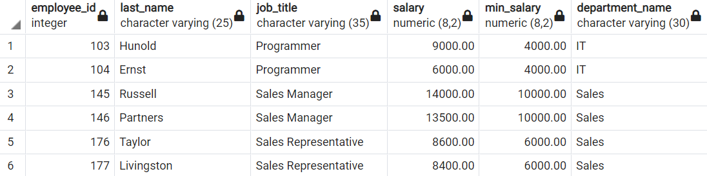
(6 files)
-
Mostra el cognom i el número d'empleat, junt amb el cognom i el número del seu director. Han de sortir tots els empleats encara que no tinguin assignat cap director. Etiqueteu les columnes Employee, EMP, Manager y MNG, respectivament. (2 punts)
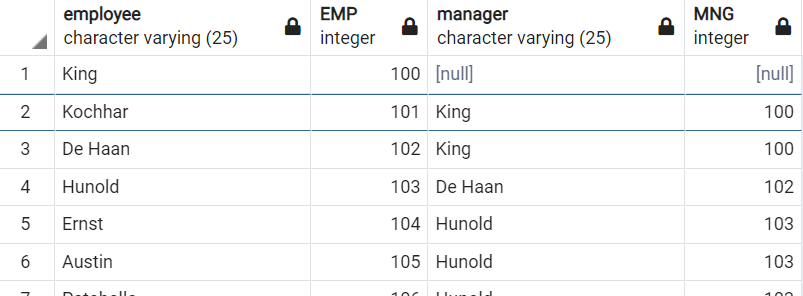
(40 files)
Part 2: Bdd Pagila (11p)
-
Visualitza el cognom y el nom del carrer per a tots els clients que tinguin la lletra a en el cognom. (2 punts)
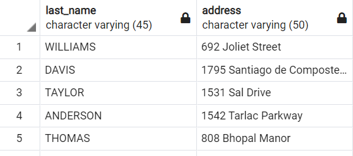
(294 files)
-
Escriu una consulta per a mostrar el cognom del client, el nom del carrer, l'identificador de ciutat i el país de tots els clients de Japó. (2 punts)
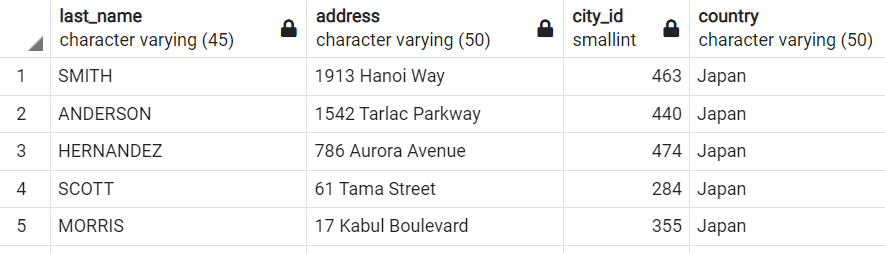
(31 files)
-
Crea un llistat únic dels actors que han participat en una pel·lícula de ciència ficció l'any 2006 (release_year). (2 punts)
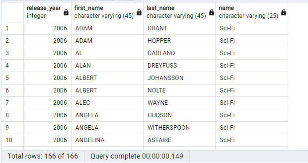
(166 files)
-
Escriu una consulta per a visualitzar el número de còpia (inventory_id), títol i codi de botiga (store_id) d'aquelles còpies que no han estat llogades. (2 punts)
(1 fila)
-
Mostra un llistat complert dels encarregats de les botigues, amb el codi, nom i cognom, email, i _ adreça complerta _, tal com es mostra en la captura. (2 punts)
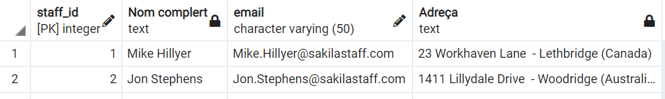
(2 files)
-
Mostra una consulta para visualitzar el codi de pel·lícula, el títol, l'any d'estrena, el preu del lloguer, l'idioma, el codi de còpia i el nom de l'encarregat. Ordena els resultats per idioma en ordre descendent, nom d'encarregat i codi de còpia. Mostra tots els idiomes encara que no tinguin cap pel·lícula associada. Etiqueta les columnes com es mostra a la imatge. (2 punts)
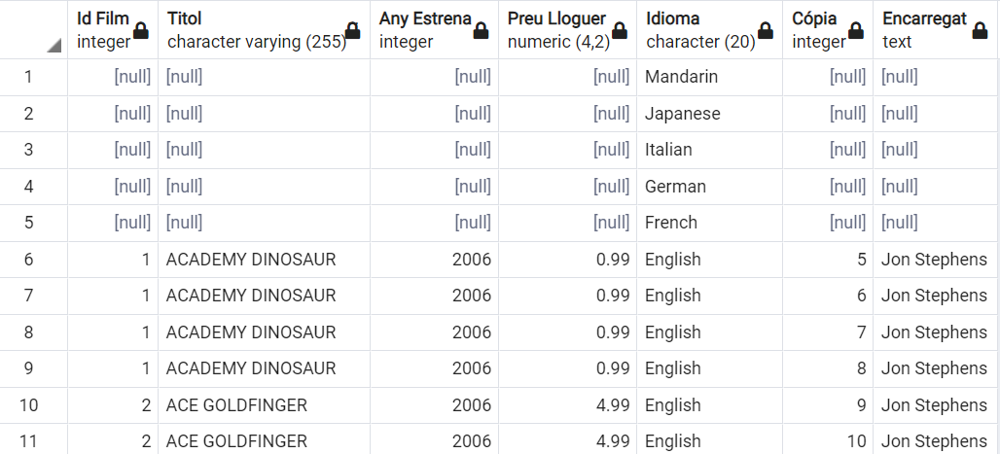
(Us haurien de sortir 4628 files)